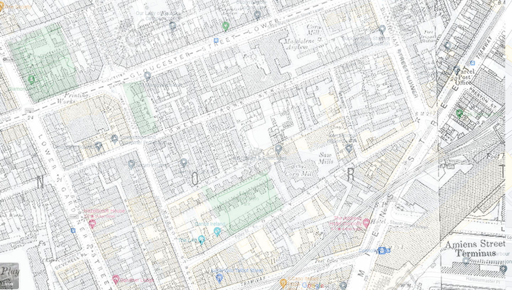
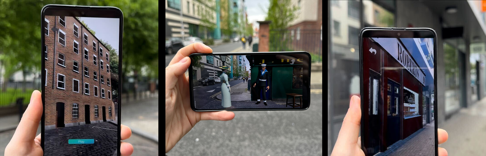

About Me

Hi, I'm Jennifer Shortall, a director, filmmaker and immersive experience designer based in Dublin, Ireland.
Contact
Have a project you'd like to discuss? Let's make something great together!
jenshortall@gmail.com
Social Links
Hi, I'm Jennifer Shortall, a director, filmmaker and immersive experience designer based in Dublin, Ireland.
Have a project you'd like to discuss? Let's make something great together!
From about the middle of the 19th Century until it was shut down by the Catholic Legion of Mary in 1925, the Monto was the name given to a collection of streets and alleys near Montgomery Street on the north side of Dublin city where prostitution was rife. Immortalised as “Night town” by James Joyce in Ulysses, the existence of this area of ill-repute was tolerated and even sanctioned by the authorities of the period because it concentrated the problem of prostitution in one easily-ignored corner of the city and kept the prostitutes from harassing the “quality” on the better streets such as Sackville Street and Grafton Street. It was said to have been the biggest red-light district in Europe at the time.
Layered map showing 1910 and present day Monto area
However, Monto was also home to thousands of Dublin’s poorest people. Many of them lived in tenements on these same streets, next door to the brothels, raising their families with six or eight or ten children or even more, often all living in just one or two rooms. By many accounts, the working class people of Monto were kind to the “unfortunates” as they called the girls, helping them out when they fell pregnant or were thrown out by the madams and even taking in the prostitutes’ children, dubbed “Monto babies” when their mothers couldn’t care for them.
Monto AR is a location-based, walkable immersive experience with six stops on a circular route around the streets that used to make up the old prostitution quarter: Foley Street, James Joyce Street and Railway Street. Users can access it for free on their personal mobile device (phone, tablet etc.) by downloading and installing the Imvizar app and visiting the location.